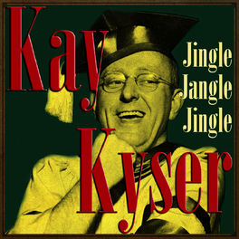
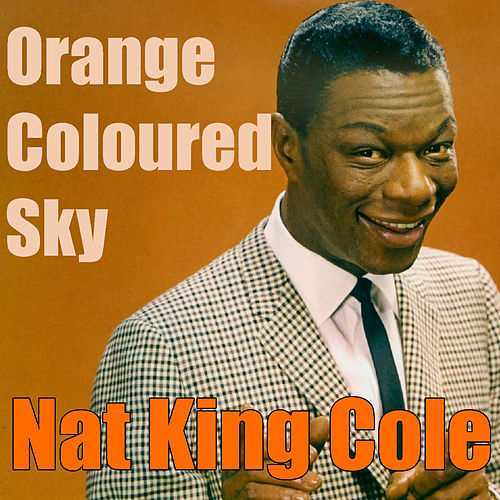
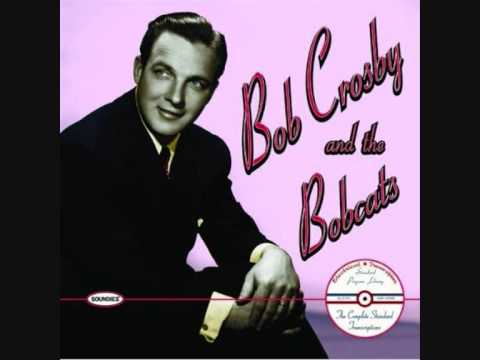
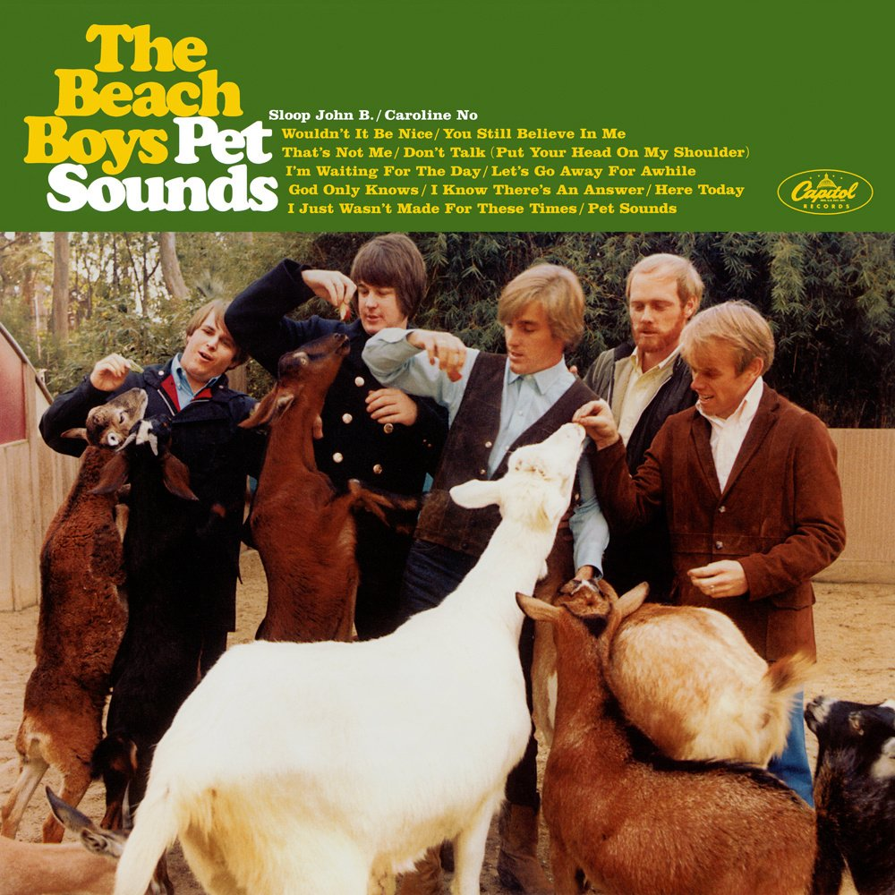
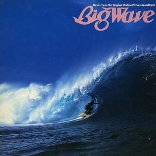
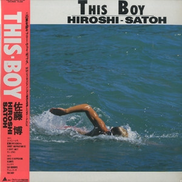
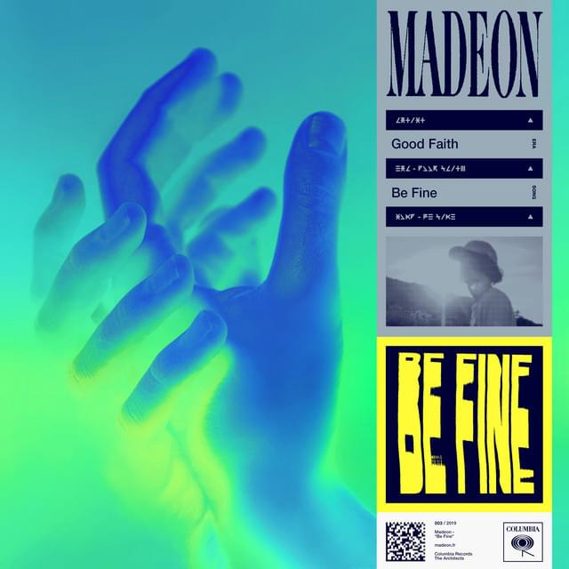
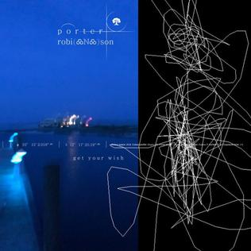

My Beat
JAZZ POP EDM
JAZZ
Jingle Jangle Jingle by Kay Kyser
1942
Also known as "I've Got Spurs That Jingle Jangle Jingle", was the most commercially successful recording by Kay Kyser, that reached no.1 in the Billboard charts in July 1942.
Orang Colored Sky by Nat King Cole
1950
Nat King Cole was an American singer and a jazz pianist. He recorded over 100 songs that became hits on the charts.
Way Back Home by Bing Crosby
1949
Way Back Home is a Decca Records compilation 78rpm album of phonograph records by Bing Crosby featuring sentimental and homely songs.
POP
Wouldn't it be nice by Beach Boys
1966
It's the opening track from their 1966 album Pet Sounds. It is distinguished for its sophisticated Wll of Sound-style arrangement and refined vocal performances.
Magic Ways by Tatsuro Yamashita
1984
Created in 1984 for the film Big Wave. It was peaked at No.2 on the Oricon Albums Chart for a 19-week stay. The album was heavily influenced by the songwriting and production of Brian Wilson.
Say Goodbye by Hiroshi Sato
1985
Hiroshi Sato was a Japanese singer-songwriter, born in Kyoto. He was influential keyboardist in the Japaneses jazz fusion and soft rock scenes during the late 1970s and 1980s, later dubbed as city pop.
EDM
Shelter by Porter Robinson & Madeon
2016

The song was released in 2016 with an announcement of both artist would be touring cities in the US and Canda, dubbed as the "Shelter Live Tour".
Be Fine by Madeon
2019
Is in the second album of Madeon called "Good Faith", it was released on November 15 2019 through Columbia Records. The album received mixed to positive reviews from critics.
Get Your Wish by Porter Robinson
2020
Released on January 29, 2020 as the first single from his second studio album Nurture. Porter Robinson wrote, produced, and provided vocals for the track.